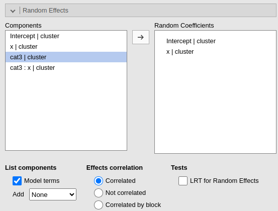
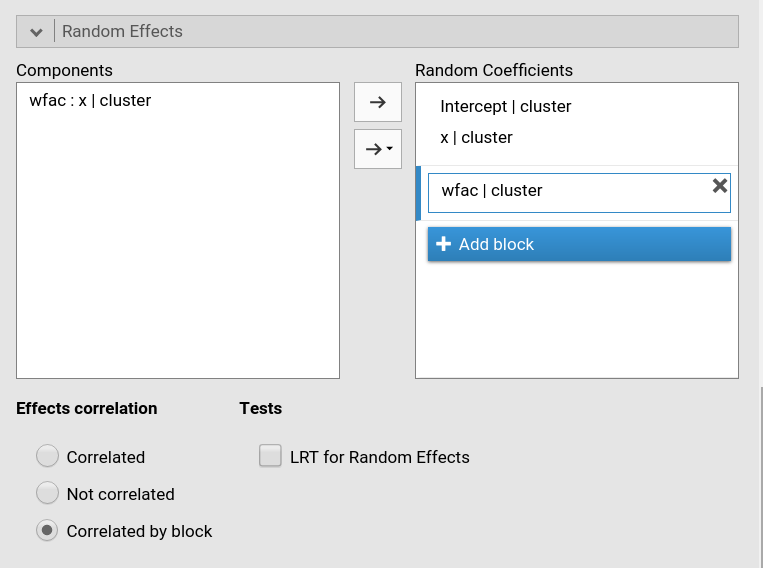
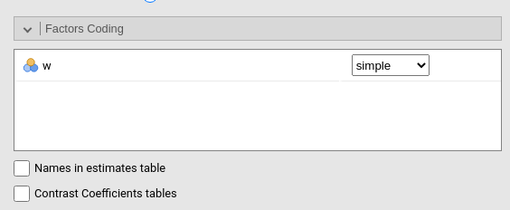
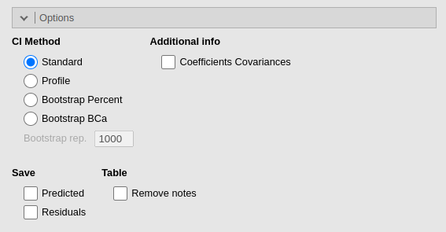

Generalized Mixed Models module
GAMLj version ≥ 2.0.0
Generalized Mixed Linear Models module of the GAMLj suite for jamovi
The module estimates generalized mixed linear models with categorial and/or continuous variables, with options to facilitate estimation of interactions, simple slopes, simple effects, post-hoc, etc. In this page you can find some hint to get started with the mixed models module.
Module
The module can estimate generalized linear mixed models for any combination of categorical and continuous variables, thus providing an easy way of obtaining multilevel or hierarchical linear models for any combination of independent variables types and a plethora of dependent variable types.
The module can estimate several mixed linear models:
- Poisson model
- Poisson overdispersed
- Logistic model
- Probit model
- Custom model with combinations of distribution and link function
For each model, any combination of categorical and continuous variables can be set as independent variables, thus providing an easy way for multiple regression, ANOVA-like, ANCOVA-like and moderation analysis for categorical and count dependent variables.
Models are defined by a link function (LF) and the dependent variable distribution, thus allowing to model different types of dependent variables:
Logistic model: logit LF, binomial distribution, modelling dichotomous dependent variables.
Probit model: inverse of the cumulative normal distribution link function, binomial distribution, modelling dichotomous dependent variables.
Poisson model: logarithm LF, Poisson distribution, modelling count dependent variables. This model is often called log-linear model when the independent variables are all categorical.
Overdispersed Poisson model: logarithm LF, Poisson distribution, quasi-maximum likelihood estimation, with overdispersion, modelling count dependent variables. This model is often used for overdispersed data.
Custom model: combination of distribution family and link function.
The available distributions are:
- Gaussian
- Binomial
- Gamma
- Inverse Gaussian
The available link functions are:
- Identity
- Log
- Inverse
- Inverse squared
The plausibility of the distribution/link function combination is no checked, but errors are issued if the data do not conform to the chosen custom model.
Estimates
The module provides parameter estimates of the fixed effects, the random variances and correlation among random coefficients.
Variables definition follows jamovi standards, with categorical independent variables defined in “fixed factors” and continuous independent variables in “covariates”.

The grouping variable is simply set by putting the corresponding variable(s) into cluster. In this version, multiple clustering variables are possible, but not combinations of classifications. That can be easily solved by recoding the clustering variables ( see Technical Details ).
Confidence intervals for the parameters estimates and for the exponential of them (expB).
The actual estimation occurs when the dependent variable, the clustering variable and at least one random coefficient (random effect) has been selected.
Random effects

Random effects across clustering variables are automatically prepared
by the module following R lmer() standards: term | cluster
indicates that the coefficient associated with term is
random across cluster.
By default the module assumes correlated random effects. All the
effects varying across the same cluster variable appearing in the Random coefficients will be correlated. To obtain
a variance component model, select Not
correlated. A custom pattern of correlation can be obtained by
selecting Correlated by block. For instance, in Fig. below,
a custom structure has been defined by allowing the intercept and the
effect of x to be correlated, whereas the effect of
wfac is independent from the others.

Fixed effects Model
By default, the model fixed effects terms are filled in automatically for main effects and for interactions with categorical variables.
Interactions between continuous variables or categorical and continuous can be set by clicking the second arrow icon.
Polinomial effects for continuous variables can be added to the model. When a variable is selected in the Components field, a little number appears on the right side of the selection. The number indicates the order of the effect.

By increasing that number before dragging the term into the Model Terms field, one can include any high order effect. Increasing the order number and combining the selection with other variables allows including interactions involving higher order effects of a variable.
Factors coding

It allows to code the categorical variables according to different coding schemas. The coding schema applies to all parameters estimates. The default coding schema is simple, which is centered to zero and compares each means with the reference category mean. The reference category is the first appearing in the variable levels.
Note that all contrasts but dummy guarantee to be centered to zero (intercept being the grand mean), so when involved in interactions the other variables coefficients can be interpret as (main) average effects. If contrast dummy is set, the intercept and the effects of other variables in interactions are estimated for the first group of the categorical IV.
Contrasts definitions are provided in the estimates table. More detailed definitions of the comparisons operated by the contrasts can be obtained by selecting Show contrast definition table.
Differently to standard R naming system, contrasts variables are always named with the name of the factor and progressive numbers from 1 to K-1, where K is the number of levels of the factor.
In reading the contrast labels, one should interpret the
(1,2,3) code as meaning “the mean of the levels 1,2, and 3
pooled toghether”. If factor levels 1,2 and 3 are all levels of the
factor in the samples, (1,2,3) is equivalent to “the mean
of the sample”. For example, for a three levels factor, a contrast
labeled 1-(1,2,3) means that the contrast is comparing the
mean of level 1 against the mean of the sample. For the same factor, a
contrast labeled 1-(2,3) indicates a comparison between
level 1 mean and the subsequent levels means pooled together.
More details and examples Rosetta store: contrasts.
Covariates Scaling
Continuous variables can be centered, standardized, cluster-based
centered, cluster-based standardized, log-transformed or used as they
are (none). The default is centered because it makes our lives much easier
when there are interactions in the model, and do not affect the B
coefficients when there are none. Thus, if one is comparing results with
other software that does not center the continuous variables, without
interactions in the model one would find only a discrepancy in the
intercept, because in GAMLj the intercept represents the expected value
of the dependent variable for the average value of the independent
variable. If one needs to unscale the variable, simple select
none.
Centered clusterwise and z-scores clusterwise center each score using the mean of the cluster in which the score belongs. For z-scores clusterwise the score is also divided by the cluster standard deviation. Log applies a simple natural logarithm transformation to the variable.
Covariates conditioning rules how the model is conditioned to different values of the continuous independent variables in the simple effects estimation and in the plots when there is an interaction in the model.
Mean+SD: means that the IV is conditioned to the \(mean\), to \(mean+k \cdot sd\), and to \(mean-k\cdot sd\), where \(k\) is ruled by the white field below the option. Default is 1 SD.
Percentile 50 +offset: means that the IV is conditioned to the \(median\), the \(median+k P\), and the \(median-k\cdot P\), where \(P\) is the offset of percentile one needs. Again, the \(P\) is ruled by the white field below the option. Default is 25%. The default conditions the model to:
\(50^{th}-25^{th}=25^{th}\) percentile
\(50^{th}\) percentile
\(50^{th}+25^{th}=75^{th}\) percentile
The offset should be within 5 and 50.
Note that with either of these two options, one can estimate simple effects and plots for any value of the continuous IV.
Covariates labeling decides which label should be associated with the estimates and plots of simple effects as follows:
Labels produces strings of the form \(Mean \pm SD\).
Values uses the actual values of the variables, after scaling.
Labels+Values produces labels of the form \(Mean \pm SD=XXXX\), where
XXXXis the actual value.Unscaled Values produces labels indicating the actual value (of the mean and sd) of the original variable scale. This can be useful, for instance, when the user needs the estimates to be obtained with centered variables (because there are interactions, for instance), but the plot of the effects is preferred in the original scales of the moderators.
Unscaled Values + Labels as the previous option, but add also the label “Mean” and “SD” to the orginal values.
The Scaling on option decides how the
scaling of the variables handle missing values: First, keep in mind that
the model will be estimated on complete cases, no matter how this option
is set. When there are missing values, however, one can scale each
variable only on the complete cases (the default), or scale
columnwise. If columnwise is selected, the
mean and standard deviation of each variable used to scale the scores
are computed with the available data of the variable, independently of
possible missing values in other variables.
Post-hocs

Post-hoc tests can be accomplished for the categorical variables groups by selecting the appropriated factor and flag the required tests
Post-hoc tests are implemented based on R package emmeans. All tecnical info can be found here
Plots

The “plots” menu allows for plotting main effects and interactions for any combination of types of variables, making it easy to plot interaction means plots, simple slopes, and combinations of them. The best plot is chosen automatically.
By filling in Horizontal axis one obtains the group means of the selected factor or the regression line for the selected covariate.
By filling in Horizontal axis and Separated lines one obtains a different plot depending on the type of variables selected:
- Horizontal axis and Separated lines are both factors, one obtains the interaction plot of group means.
- Horizontal axis is a factor and Separated lines is a covariate. One obtains the plot of group means of the factor estimated at three different levels of the covariate. The levels are decided by the Covariates conditioning options above.
- Horizontal axis and Separated lines are covariates. One obtains the simple slopes graph of the simple slopes of the variable in horizontal axis estimated at three different levels of the covariate.
By filling in Separate plots one can
probe higher-order interactions. If the selected variable is a factor,
one obtains a two-way graph (as previously defined) for each level of
the “Separate plots” variable. If the selected variable is a covariate,
one obtains a two-way graph (as previously defined) for the
Separate plots variable centered to conditioning values
selected in the Covariates conditioning
options. Any number of plots can be obtained depending on the order of
the interaction.
By flagging Random effects one obtains
the random effects estimated values in the plot along with the fixed
effects. In case of multiple cluster variables, the first cluster
variable in the cluster field of “variable role” panel is
used (if it is included in the model). To change the cluster variable
used to plot the random effects, change the order of the variables in
the “variable role” definition.
Estimated marginal means

Print the estimate expected means, SE, df and confidence intervals of
the predicted dependent variable by factors in the model. Any
combination available in the model (main effects, interactions,
non-linear terms), can be requested. If the term involves categorical
independent variables, means of each level of the variable are
presented. If the term involves continuous variables, expected means
computed at the levels defined in Covariate Scaling are
presented.
Options

The precision/speed parameter applies to
mixed models with one random effect. Higher numbers increase precision
in the estimation with a speed cost. It corresponds to the
nAGQ parameter of glmer command in R package
lme4.
The CI method decides which method is used for computing confidence intervals. Wald uses Wald statistics and it is less precise than the other methods, but it is significantly faster. Profile is more precise but slower. Boot, bootstrap method, is the slowest. Details of the implementation can be found in lme4 manual
Examples
Some worked out examples of the analyses carried out with jamovi GAMLj Mixed models are posted here (more to come)
Details
Some more information about the module specs can be found here